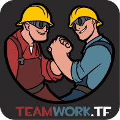

"Provides a platform and tools to bring the TF2 community together. Between 2015 and 2020 we
ran a network to
support TF2 YouTubers. During a short break we came back with focus
on community servers and statistics. And after a succesful Patreon campaign, teamwork.tf has now brought back
the 'yellow pages for TF2'. Beside that we now also have great community tools for map makers, to get insight
in player behaviour of maps."
